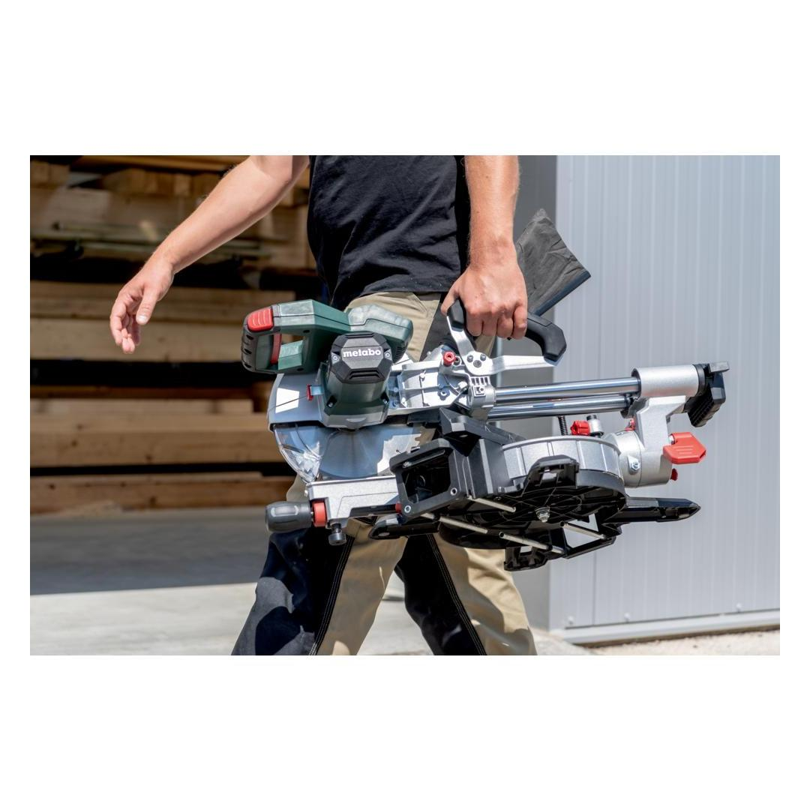
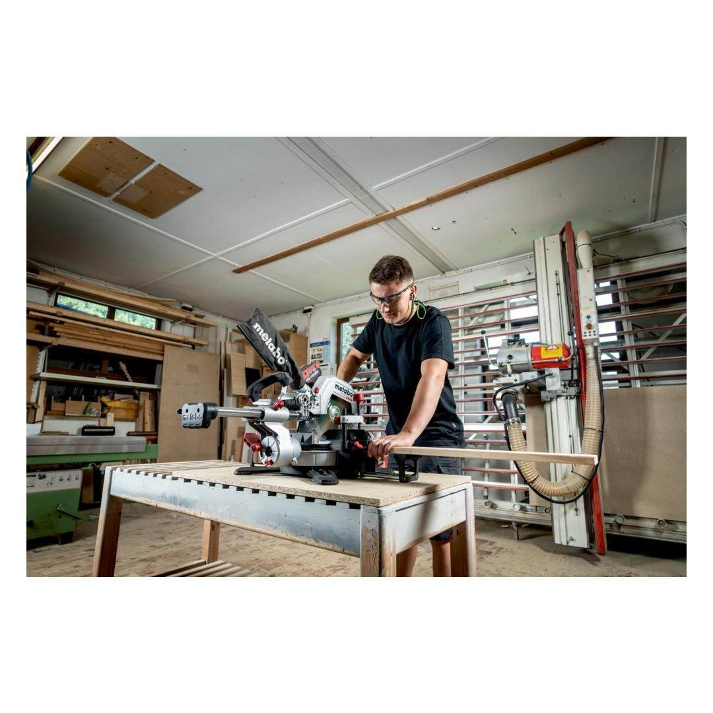
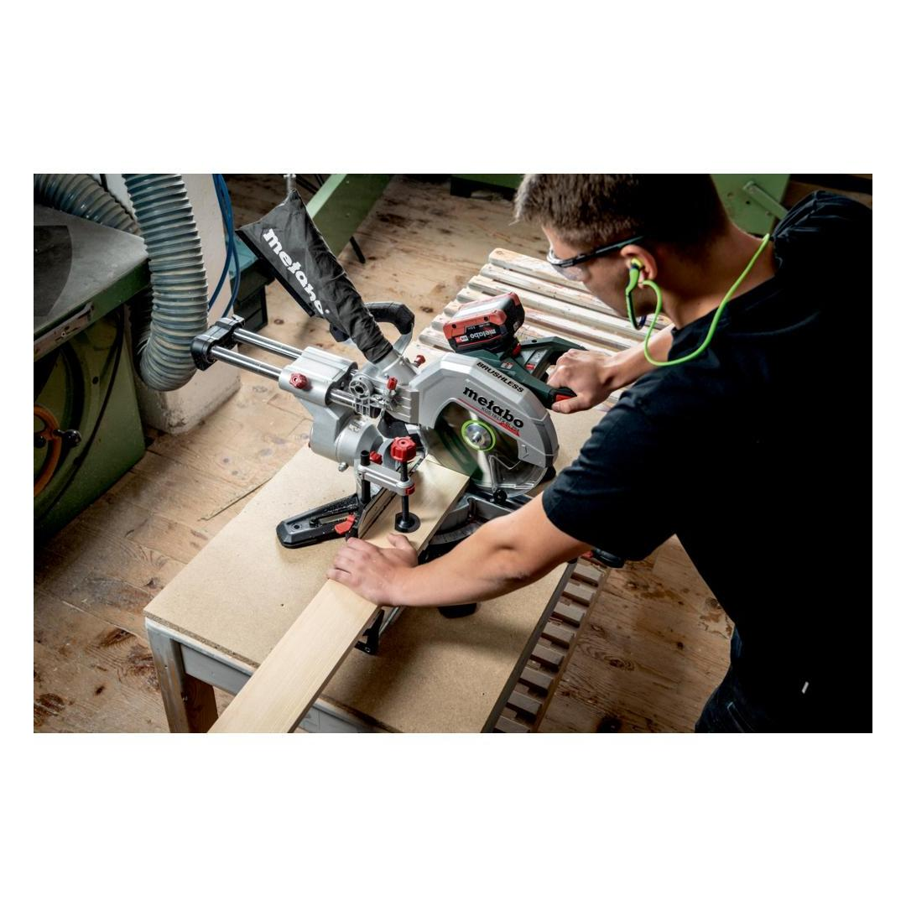
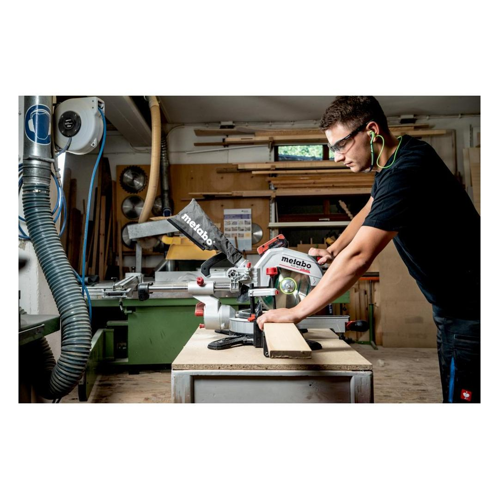
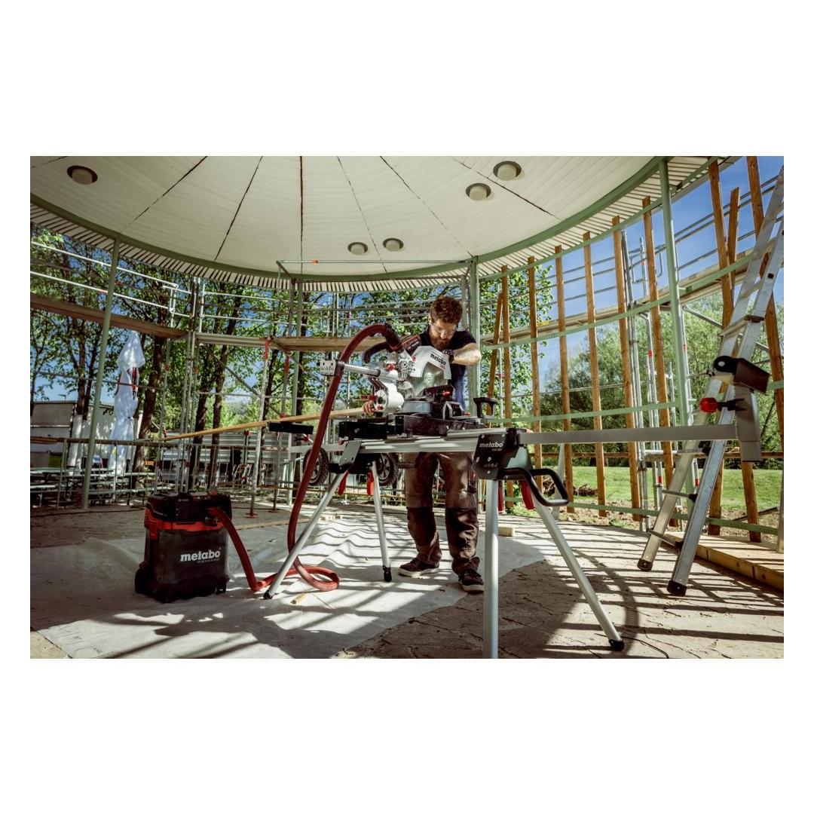
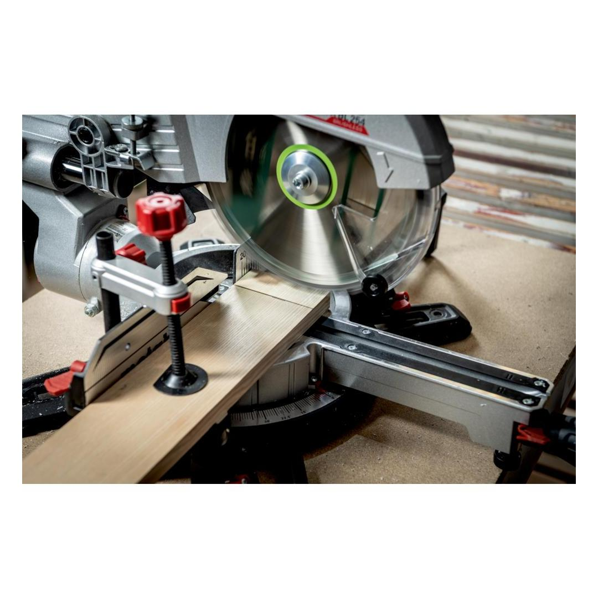
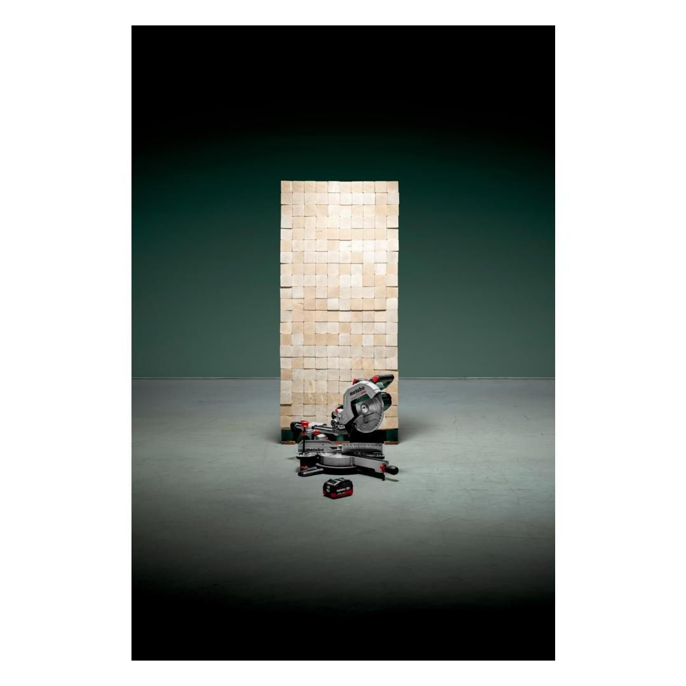
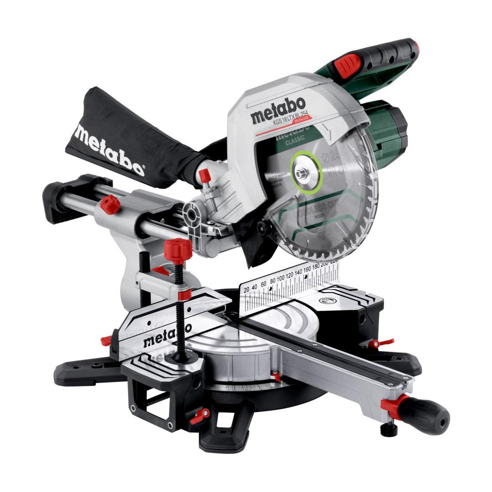

614254850









| Battery voltage | 18 V |
| Saw blade | 254 x 30 mm // 10 x 1.181 " |
| No-load speed | 4000 rpm |
precise shadow cutting line without re-adjustment thanks to cleverly positioned LED
Fast Breakfast brake for increased safety with fast stopping of the tool used.
Brushless MotorUnique Metabo brushless motor for quick work progress and highest efficiency for any application
CAS, the multi-brand battery system100% compatibility of machine, battery packs and chargers of one volt class – from Metabo and other brands. Discover now at www.cordless-alliance-system.com
Electronic soft startfor smooth start-up
Optimal dust protectionfor clean, comfortable working: dust and chips are extracted immediately and efficiently
| Battery voltage | 18 V |
| Support surface | 345 x 760 mm // 13.58 x 29.9 " |
| Maximum cutting width 90°/45° | 305 / 215 mm // 12 / 8.46 " |
| Maximum cutting depth at 90°/45° | 92 / 47 mm // 3.6 / 1.85 " |
| Cutting capacity 90°/90° | 305 x 92 mm // 12 x 3.54 " |
| Cutting capacity 45°/45° | 215 x 47 mm // 8.66 x 1.85 " |
| Turntable setting left/right | 50 / 50 ° |
| Saw blade tilt left/right | 47 / 2 ° |
| Saw blade | 254 x 30 mm // 10 x 1.181 " |
| No-load speed | 4000 rpm |
| Max. cutting speed | 53 m/s / 174 ft/s |
| Weight without battery pack | 14.8 kg / 32.6 lbs |
| Sound pressure level | 91 dB(A) |
| Sound power level (LwA) | 100 dB(A) |
| Uncertainty of measurement K | 3 dB(A) |
| Saw blade "cordless cut wood - classic", 254x30 Z48 |
| 2 Table length extensions |
| Length Guide |
| Material clamp |
| Tool for saw blade change |
| Chip Collection Bag |
| without battery pack, without charger |